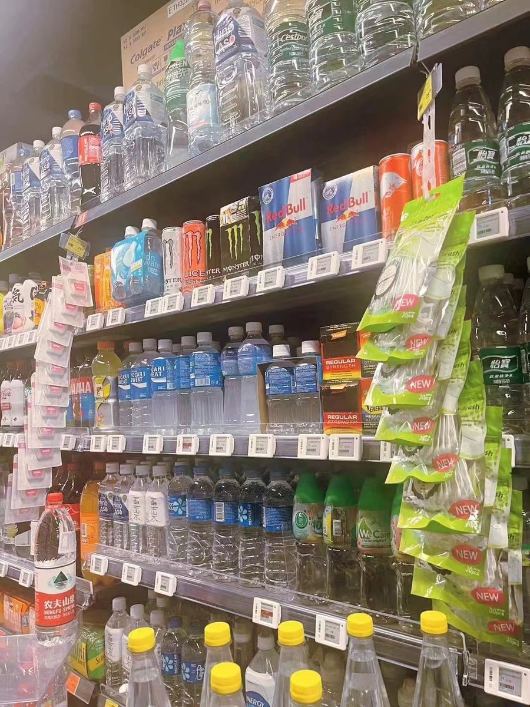
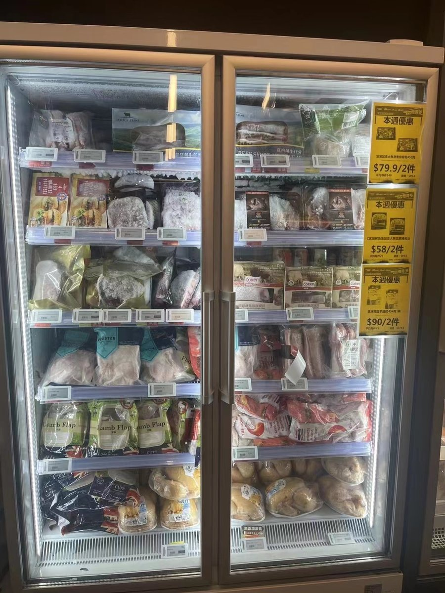

Grocery is where digital price tags earn their keep fastest: no other retail format combines so many SKUs, so many weekly promotions, and so much short-dated fresh stock. This guide covers what the tags are, which chains use them, what they actually change in store operations, the surge-pricing evidence, cold-chain requirements and realistic costs. If you want the technology fundamentals first, start with what electronic shelf labels are.
What Are Digital Price Tags in Grocery Stores?
How are they different from paper shelf tags?
A digital price tag is a small e-paper display that receives price and product data over a low-power wireless network, so a price change made in the pricing system appears on the shelf in minutes — storewide. A paper tag is a printed snapshot: correct the moment it is hung, and drifting out of date from then on. In a supermarket carrying 20,000–40,000 SKUs with weekly promotion cycles, that difference compounds into thousands of labor hours and a steady stream of shelf-versus-checkout mismatches every year.
Terminology overlaps freely in the trade: digital price tags, electronic shelf labels, ESL tags, digital shelf labels and e-ink price tags all describe the same category. Our guide to types of electronic shelf labels breaks the category down by display, size and network; this article focuses on how grocers specifically use them.
Which Grocery Chains Use Digital Price Tags?
Adoption crossed from pilot to mainstream in 2024–2026, led by Walmart and followed by most major US grocers.
| Retailer | Status | Source |
|---|---|---|
| Walmart | Digital shelf labels in every US store (~4,600) by end of 2026. | CNBC |
| Kroger | Expanding chainwide after testing in 20 stores. | CNBC |
| Whole Foods Market | Testing in roughly 50 stores. | CNBC |
| Aldi, Schnucks | ESLs connected to Instacart’s picker system across thousands of stores. | Grocery Dive |
| Lidl, Hy-Vee, Good Food Holdings | Among grocers that have embraced ESLs; European chains adopted years earlier. | Grocery Dive |
The scale of the Walmart project alone reshaped the global e-paper supply chain — we cover that story, with quarterly shipment data, in our Walmart digital shelf labels analysis.
What Do Grocers Actually Use Digital Price Tags For?
Is it just about changing prices faster?
Price changes are the entry point, but grocers get their payback from five distinct jobs:
- Promotion cycles without label walks. A weekly ad with hundreds of price changes goes live in software; every affected shelf updates in minutes rather than a night of printing and walking.
- Shelf-to-checkout accuracy. The register and the shelf read from the same system, eliminating the mismatches that drive complaints and, in some states, pricing-accuracy penalties.
- Fresh-food markdowns. Scheduled, automatic price reductions move short-dated stock before it becomes waste (details below).
- Picking support for online orders. Instacart’s integration flashes a light on the tag to guide pickers to the right product — the same pick-to-light mechanic used in warehouse shelf labeling.
- A live shelf-edge data layer. QR codes, stock flags and unit-price displays turn the shelf into an output of — and input to — the store’s systems, which is the foundation for AI-driven pricing done transparently.

Do Digital Price Tags Raise Grocery Prices?
What does the research actually show?
The best evidence available says no: an academic analysis of roughly 180 million product-level price observations found no increase in temporary price hikes after a US grocery chain adopted electronic shelf labels. The study — by economists Robert Sanders (UC San Diego), Ioannis Stamatopoulos (UT Austin) and Robert Bray (Northwestern) — measured how often prices briefly spiked before and after ESL installation. The answer: about 0.0042% of products on an average store-day before adoption, and statistically no different after.
The economic logic matches the data. Grocers compete on basket trust: a shopper who suspects the price will jump between the shelf and the register stops coming back, and that lifetime loss dwarfs whatever a demand-timed price bump could earn on a bottle of soda. What ESLs actually get used for, the researchers note, is more markdowns and faster corrections — changes in the shopper’s favor. Lawmakers in several states are still debating restrictions, so retailers deploying ESLs should pair them with clear pricing policies; we examine the debate in the Walmart context here.
Source: UC San Diego Today.
Fresh Food, Chillers and Freezers
How do markdowns work with digital price tags?
The pricing system schedules automatic reductions as products approach their sell-by date, and the shelf label updates the moment the rule fires. Instead of a clerk walking the fresh aisle with a markdown gun — a task that happens late, inconsistently or not at all on busy days — short-dated yogurt, bread and meat get their discount on time, every time. Sold at a markdown beats binned at full loss, so reliable markdown execution directly reduces shrink on fresh categories.
Do the tags survive the cold chain?
Chilled and frozen cases need tags specified for low temperatures: battery chemistry, display refresh and housing seals all behave differently below zero. Cold-rated ESL models exist for exactly this, and the practical buying advice is simple — ask for tested battery life at your case temperature, not the room-temperature datasheet figure. Our note on ESL battery life explains what drives the difference.

What Do Digital Price Tags Cost a Grocery Store?
What should a grocer budget?
Plan around $5–$20 per tag for e-paper hardware, plus gateways, software and installation — then judge the project on payback, not unit price. A typical supermarket labels 20,000–30,000 positions, so the hardware alone is a six-figure decision. The payback comes from promotion labor, pricing-error elimination, markdown-driven shrink reduction and, increasingly, the AI pricing layer the tags enable.
| Cost component | What drives it | Grocery-specific note |
|---|---|---|
| Tags | Size, color, volume. Small monochrome for dense aisles; color for fresh and promo shelves. | Cold-rated tags for chillers/freezers cost more — spec them only where needed. |
| Gateways | Floor area and layout; one gateway covers a zone of tags. | Back rooms and prep areas may need coverage too if you label them. |
| Software & integration | POS/ERP connection, template design, user training. | The promotion-calendar integration is where grocery ROI is won or lost. |
| Installation | Rails, clips and fixing per shelf type. | Wire racks, freezer doors and produce tables each need the right mount. |
Tag price range: AiESL pricing guide — full breakdown in how much electronic shelf labels cost. For the multi-year comparison against paper tickets, see ESL vs paper labels.
How to Start: A Short Checklist for Grocers
- Pick one pilot store and one hard category — fresh or beverages, where promotion and markdown pressure is highest.
- Integrate the promotion calendar first. If weekly ads flow automatically to the shelf, the labor case proves itself in one cycle.
- Spec by zone: small monochrome tags for center store, color for fresh and feature shelves, cold-rated for cases.
- Set markdown rules early and measure shrink on short-dated categories before and after.
- Publish a plain-language pricing policy. The surge-pricing debate is live; transparency is cheap and trust is not.
To see hardware options by size and temperature rating, compare AiESL products, explore the supermarket & grocery solution, or browse customer deployments.
Sources
- UC San Diego Today — New research debunks fears of supermarket surge pricing with electronic shelf labels
- CNBC — Electronic shelf labels are taking over US grocery stores
- CNBC — Walmart digital price labels in every US store by end of 2026
- Grocery Dive — Grocers continue to add electronic shelf label software